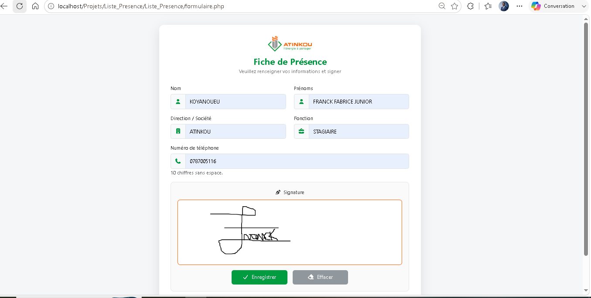
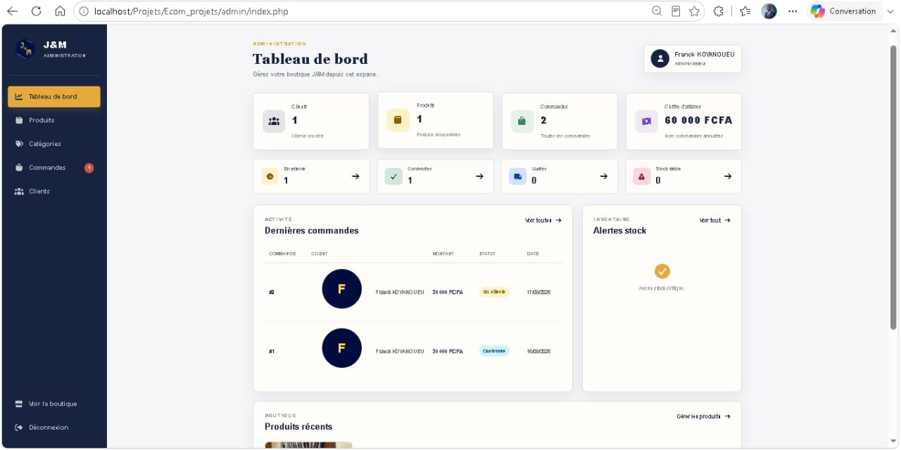

Technicien Informatique spécialisé en support IT et développement web, je crée des solutions numériques fiables et performantes pour les entreprises en Côte d'Ivoire et au-delà.
Je suis KOYANOUEU FRANCK, passionné par l’informatique
et le digital. Je m’intéresse particulièrement au
développement web, à la création de contenus numériques
et à la gestion de projets digitaux.
Je conçois des solutions web modernes, responsives
et fonctionnelles, tout en mettant l’accent sur une
expérience utilisateur simple et efficace. Curieux
et motivé, je cherche constamment à développer mes
compétences et à relever de nouveaux défis dans le
domaine du numérique.
Un ensemble de compétences techniques et professionnelles développées à travers mes expériences en support informatique, déploiement, maintenance, réseaux, développement web et gestion des systèmes d'information.
Participation au déploiement et à la maintenance du parc informatique ainsi qu’à l’assistance technique de proximité auprès des utilisateurs.
Participation au suivi des activités informatiques, à la gestion des informations techniques et au support des utilisateurs dans le cadre des activités du système d'information.
Participation à la conception, au développement et à la maintenance de solutions web répondant aux besoins des utilisateurs.
Mon parcours académique et professionnel m'a permis de développer des compétences en informatique, gestion de projet digital et création de contenus numériques.
Formation axée sur la gestion de projets digitaux, la création de contenus numériques et le montage vidéo.
Parcours en informatique avec développement de compétences en programmation, bases de données, systèmes, réseaux et développement web.
Niveau Licence 3Obtention du Baccalauréat.
Obtention du Brevet d'Études du Premier Cycle.
Je conçois et développe des sites web et applications modernes, responsifs et adaptés aux besoins des utilisateurs. J’interviens de la conception de l’interface jusqu’à l’intégration des fonctionnalités et à la gestion des données.
En savoir plusJe réalise des contenus visuels modernes et attractifs pour valoriser votre image et vos projets. Je crée et monte des vidéos adaptées aux réseaux sociaux, aux présentations et à la communication digitale.
En savoir plusJ’accompagne la planification et le suivi de projets numériques, de la définition des objectifs jusqu’à leur réalisation. J’utilise des outils de gestion comme Trello et Notion.
En savoir plus
